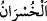

15. (Ey Allah’a eş koşanlar!): Siz de O’ndan başka dilediğinize tapın! De ki:
Gerçekten hüsrana uğrayanlar, kıyamet günü hem kendilerini, hem de âilelerini
ziyana sokanlardır. Bilesiniz ki, bu apaçık hüsrandır.
Ben, bana emredilene uydum. Ey kâfirler topluluğu, “Siz de O’ndan başka” kulluk
etmeyi “dilediğinize tapın!” Buradaki emir, tıpkı “Dilediğinizi yapın!” (Fussılet,
41/40) âyetinde olduğu gibi tehdîd anlamındadır.
el-İrşâd’da şöyle der: “Bu ifâde, açıkça anlaşıldığı üzere Allah’ın kendilerine ne
kadar öfkelenmiş olduğunu gösteriyor. Kâfirler kendilerine yasaklanan husustan
vazgeçmeyince, azâbın başlarına gelmesi için sanki yasaklanan o husus kendilerine
emredilmiştir.
Müşrikler: “Ey Muhammed, sen ziyan ettin! Çünkü atalarının dinine karşı geldin”
deyince, Allah Teâlâ şöyle buyurdu: “De ki: Gerçekten hüsrana uğrayanlar,” kişinin
önem verdiği şeyi kaybetmesi ve kendisi için mutlaka lâzım olan şeyi telef etmesinden
ibâret olan hüsrana, tam olarak uğrayanlar, “kıyamet günü” cennet yerine cehennem
ateşine girdikleri vakit “hem” dalâlet ve kendileri için küfrü tercih etmeleri yüzünden
“kendilerini, hem de” âilelerini dalâlete sevketmeleri ve onlar için küfrü tercih
etmeleri yüzünden “âilelerini ziyana sokanlardır.” Yâni sermayesini bitirircesine kayıp
ve telef edenlerdir. Çünkü, hem kendilerini hem de âilelerini ebedî azâba maruz
bırakmışlar, kendisinin ötesinde daha büyük bir helak bulunmayan bir helake dûçar
etmişlerdir.
Kâşifî der ki: “Onlar nefislerine zarar vermelerinden dolayı sapıttılar, yollarını
kaybettiler.”
el-Müfredât’ta der ki: “
” sermayenin azalması demektir. Mal, rütbe, sağlık,
selamet, akıl, îman ve sevabın eksilmesi ile ilgili olarak kullanılır. Allah, sevabın
eksilmesini “apaçık hüsrân/ziyan” saymıştır.”
el-Kâmûs’ta belirtildiği üzere “kişinin ehli” aşireti ve yakınlarıdır. İbnü’l-Melek’in
Şerhu’l-Meşârık’ında geçtiği üzere eşler, çocuklar, köleler, câriyeler, akraba ve
arkadaşlar olarak ve bunların tamamı olarak da tefsir edilmiştir.
“Bilesiniz ki, bu” hüsran “apaçık hüsrandır.” Çünkü onlar cenneti cehennem ateşi ile,
dereceleri de derekelerle değişmişlerdir. Nitekim Keşfü’l-esrâr’da böyle geçmektedir.
Kâşifî der ki: “Biliniz ve haberdar olunuz ki, o apaçık ziyan, mevkıf ehlinden olan hiç
kimseye gizli kalmaz.”
et-Te’vîlâtü’n-Necmiyye’de der ki: “Hakîkatte ziyan eden hevâsına tâbi olmak
sûretiyle dünyasını kaybeden, kendisine yasaklanan şeyleri irtikâb ederek ukbâsını
kaybeden ve başkasını dost edinerek Mevlâ’sını kaybedendir.
Allah Teâlâ daha sonra onların hüsranlarını bir tür beyân ile şerh ederek şöyle
buyuruyor: